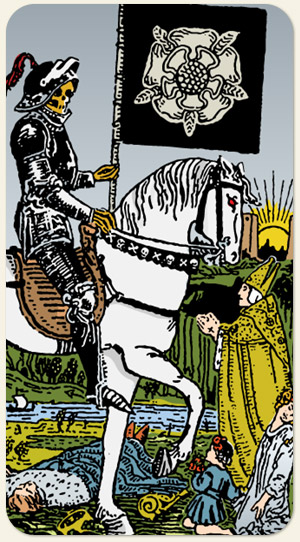

O desapego, o encerramento de ciclos e a renovação. A força que remove as velhas estruturas para que algo novo possa nascer. É a carta da transmutação: nada morre verdadeiramente, tudo se transforma. O Sol Nascente entre as Torres representa a consciência superior, indica que a morte é um portal, simboliza a luz da nova consciência que surge após a escuridão da perda. O rio representa o fluxo contínuo da vida e do tempo (o rio Estige ou o fluxo heraclítico). O barco simboliza a jornada da alma ou da psique através das águas do inconsciente em direção a novos estados de ser. Um rei (morto), uma criança, uma jovem e um bispo enfrentam a morte de formas distintas. Isso representa que a mudança é universal e atinge todas as partes da nossa psique (ego, inocência, desejo e fé). O Bispo representa a tradição e a tentativa humana de entender o mistério através da fé. Ele é o único que encara a morte diretamente, simbolizando a necessidade de espiritualidade ou filosofia ao enfrentar crises existenciais.
Positivo: Transformação, possibilidade de mudar de acordo com a experiência, encerrar ciclos estéreis.
Negativo: O fim no sentido desfavorável, algo que causa um incômodo intenso, sinal de perigo, algo que não tem solução, insistir em algo que já deveria ter tido fim.
Esqueleto: Representa a estrutura que permanece após o que é efêmero desaparecer.
Armadura Negra: Simboliza a invencibilidade e a inevitabilidade da mudança, que não pode ser detida por defesas externas.
Símbolos: Rosa Branca, Cavalo Branco, Aurora.
Cores: Preto, Branco, Amarelo, Azul.
Elemento: Fogo.